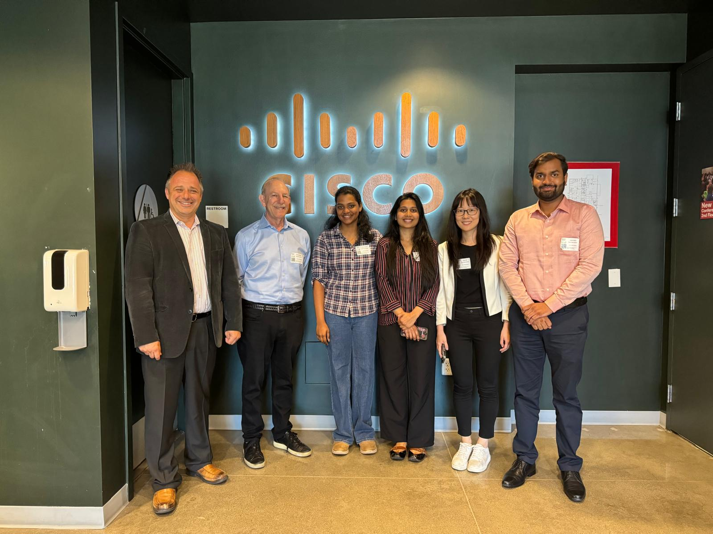
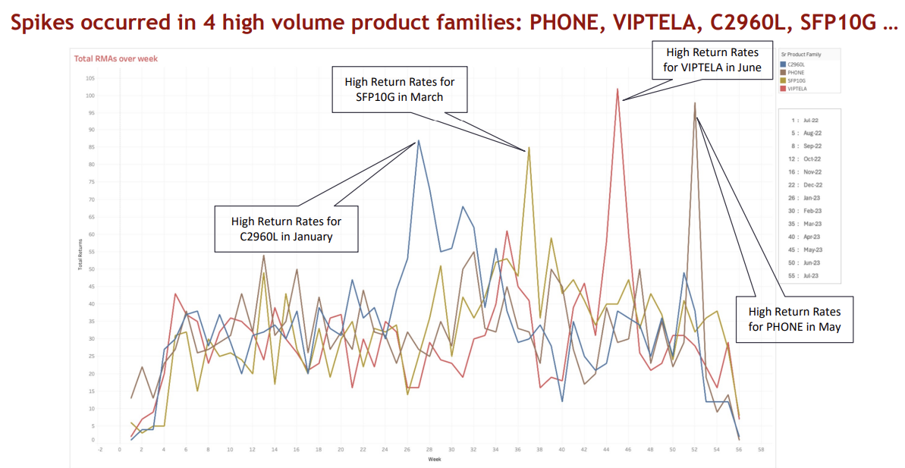
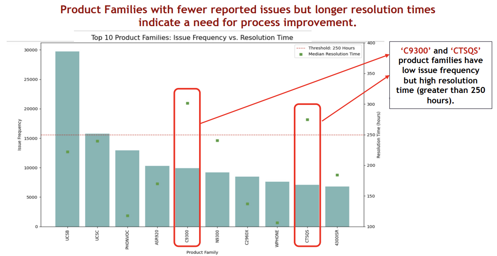
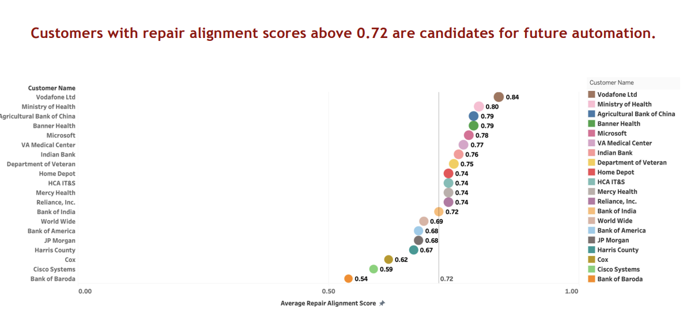
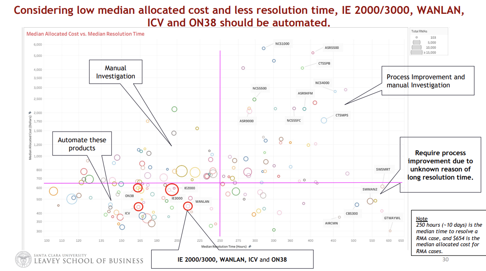
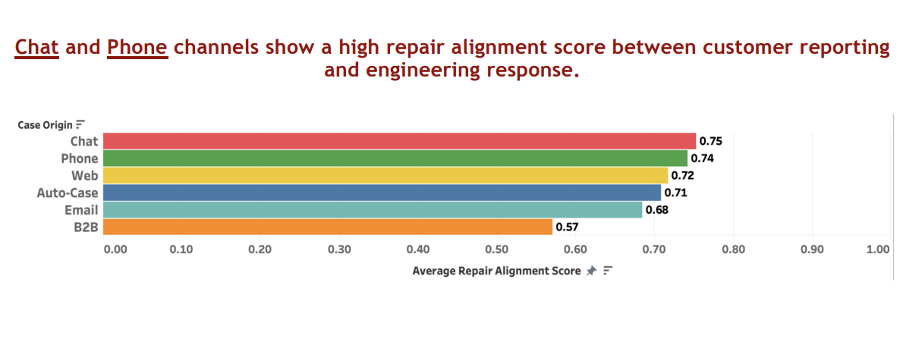

Overview
As part of a practicum with Cisco, our team analyzed large-scale product return (RMA) data to identify patterns in failure frequencies, resolution delays, and repair alignment scores across multiple product families and customer segments.
Data Analytics • Product Returns • Resolution Times • Automation
As part of a practicum with Cisco, our team analyzed large-scale product return (RMA) data to identify patterns in failure frequencies, resolution delays, and repair alignment scores across multiple product families and customer segments.

A wonderful collaborative team effort with Santa Clara University students and Cisco mentors.




